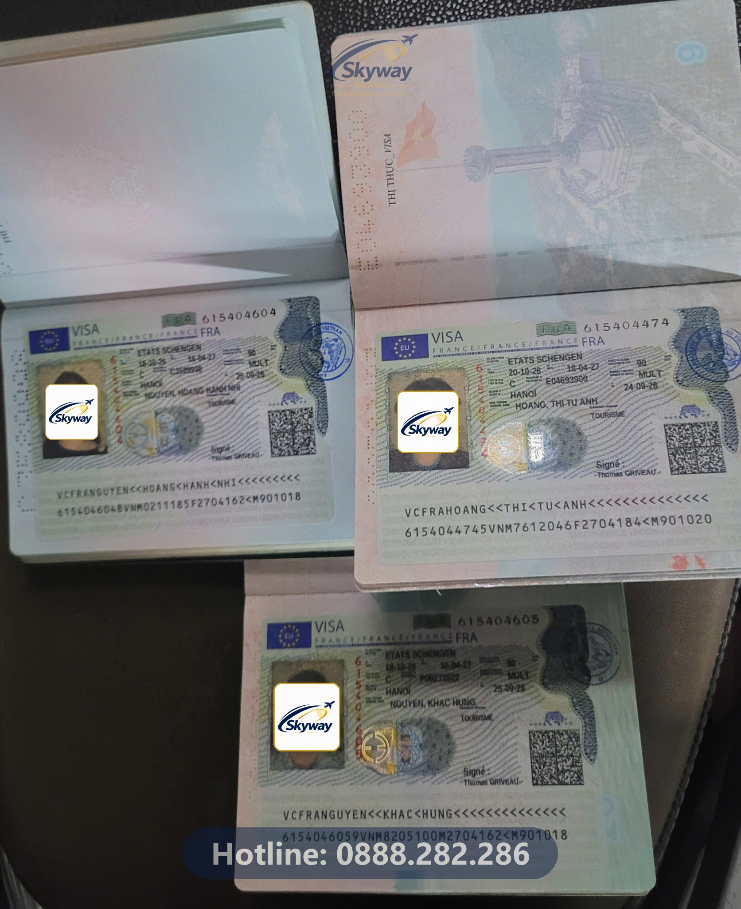
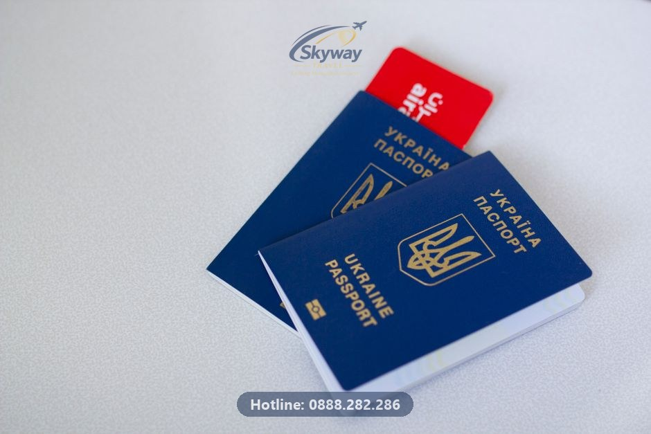
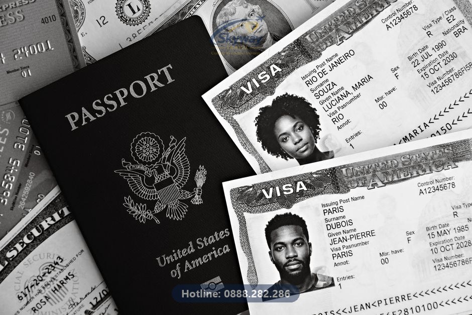

Cần nhớ: Quy trình xét duyệt visa Pháp năm 2026 đã được thắt chặt đáng kể về thời gian và các giấy tờ xác nhận công việc, học tập. Hồ sơ cần sự chuẩn xác tuyệt đối ở từng đầu mục để tránh bị yêu cầu bổ sung hoặc từ chối.
Quá trình xét duyệt hồ sơ thị thực Pháp đang trải qua những bước siết chặt đáng kể mà bất kỳ ai có kế hoạch ghé thăm khối Schengen đều phải cập nhật. Theo kinh nghiệm hỗ trợ từ bộ phận xử lý visa của Visa Nhanh 24h, cơ quan lãnh sự hiện nay không chỉ nhìn vào số dư trong tài khoản hay một bộ giấy tờ hình thức, mà đang thẩm định cực kỳ kỹ lưỡng từng chi tiết nhỏ nhất trong nhân thân và công việc của người nộp đơn.
Thời gian xét duyệt thực tế có xu hướng kéo dài hơn so với trước đây, đòi hỏi mỗi bộ hồ sơ phải có độ hoàn thiện cao ngay từ lần nộp đầu tiên. Việc các cơ quan ngoại giao gia tăng mức độ rà soát xuất phát từ lượng hồ sơ tăng mạnh và yêu cầu quản lý di trú ngày càng khắt khe. Do đó, nếu bạn giữ tư tưởng chuẩn bị qua loa hay áp dụng các mẹo vặt truyền miệng cũ, rủi ro bị gọi lên phỏng vấn bổ sung hoặc từ chối thẳng thừng là rất cao.
Một trong những điểm thay đổi rõ nét nhất trong đợt siết chặt quy định năm nay nằm ở nhóm hồ sơ có trẻ em đi cùng. Nếu trước đây, việc xin visa cho người dưới 18 tuổi khá đơn giản với giấy khai sinh và đơn cam kết của bố mẹ, thì nay các yêu cầu đã được nâng lên một mức độ mới để đảm bảo tính ràng buộc và minh bạch về mặt pháp lý.
Cụ thể, hồ sơ của học sinh, trẻ em bắt buộc phải có giấy xác nhận từ phía nhà trường đang theo học kèm theo đơn xin nghỉ học hợp lệ có mốc thời gian cụ thể khớp với lịch trình chuyến đi. Lãnh sự quán muốn nhìn thấy sự đồng thuận rõ ràng từ phía cơ quan giáo dục, đồng thời chứng minh rằng trẻ em chỉ đi du lịch ngắn ngày và chắc chắn sẽ quay trở lại trường học. Thiếu một trong các giấy tờ này, hồ sơ của bé gần như sẽ bị treo ngay tại cửa tiếp nhận.
Đối với người lao động đang làm việc tại các cơ quan, doanh nghiệp, đơn xin nghỉ phép không chỉ đơn thuần là tờ giấy xác nhận thời gian nghỉ vài ngày như trước. Quy trình thẩm định hiện nay yêu cầu văn bản này phải thể hiện tường minh nội dung cơ quan, doanh nghiệp đồng ý cho nhân sự xuất cảnh ra nước ngoài và cam kết tiếp nhận lại làm việc sau khi kết thúc chuyến đi.
Thực tế xử lý hồ sơ tại Visa Nhanh 24h cho thấy, nhiều người lao động thường dùng mẫu đơn chung chung do công ty tự in mà quên mất dòng chữ xác nhận đồng ý cho xuất cảnh hoặc thiếu thông tin cụ thể về thời điểm tái gia nhập công việc. Lãnh sự quán xem đây là lỗ hổng lớn về mặt liên kết công việc tại Việt Nam, qua đó dễ dẫn đến nghi ngờ về động cơ lưu trú dài hạn. Vì vậy, tờ đơn xin phép cần được soạn thảo cẩn thận, có dấu mộc đỏ và chữ ký của người đại diện có thẩm quyền.

Hồ sơ 'trắng' – tức chưa từng đi du lịch các nước phát triển như Mỹ, Canada, Anh, Úc hoặc các nước trong khối Schengen trong vòng 5 năm qua – luôn là bài toán khó cho người xin visa Pháp. Trong bối cảnh quy định bị thắt chặt hiện tại, việc thiếu vắng dấu ấn xuất nhập cảnh ở các quốc gia có tiêu chuẩn kiểm duyệt cao sẽ khiến cơ quan lãnh sự hoài nghi về khả năng tự chủ tài chính cũng như ý thức tuân thủ pháp luật lưu trú của bạn.
Để bù đắp cho điểm yếu này, toàn bộ các đầu mục còn lại từ công việc, tài chính đến lịch trình di chuyển phải cực kỳ logic và chi tiết. Bạn cần xây dựng một bản thuyết minh chuyến đi rõ ràng, chứng minh nguồn gốc tài sản minh bạch và liên kết chặt chẽ với cuộc sống ổn định tại Việt Nam. Không có chỗ cho sự sơ sài; mỗi giấy tờ giải trình đều phải có căn cứ xác thực để thuyết phục viên chức lãnh sự cấp thị thực cho lần đặt chân đầu tiên đến châu Âu.
Chứng minh tài chính chưa bao giờ là chuyện chỉ cần bỏ một số tiền lớn vào sổ tiết kiệm rồi chụp lại là xong. Lãnh sự quán Pháp đọc sao kê tài khoản ngân hàng hàng tháng để tìm kiếm dòng tiền thực tế, đối chiếu thu nhập từ lương với chức danh công việc mà bạn khai báo trong tờ khai nhân thân.
Nếu bạn nhận lương qua thẻ, con số trên sao kê phải khớp với hợp đồng lao động. Trong trường hợp là người làm tự do hoặc kinh doanh riêng không có bảng lương cố định, việc giải trình dòng tiền qua các giao dịch kinh doanh, hóa đơn hay giấy phép đăng ký kinh doanh là yếu tố sống còn để giữ vững uy tín hồ sơ. Tìm hiểu thêm về visa châu Âu và các bước chuẩn bị tài chính chuyên sâu sẽ giúp bạn tránh được những cú sốc từ chối không đáng có từ cơ quan ngoại giao.
Một lịch trình du lịch qua loa, sao chép trên mạng thường dễ dàng bị bộ phận thẩm định phát hiện. Lịch trình khi xin visa Pháp cần thể hiện chi tiết từng ngày bạn đi đâu, chơi gì, di chuyển bằng phương tiện gì giữa các thành phố trong khối Schengen.
Các xác nhận đặt phòng khách sạn, vé máy bay khứ hồi cũng phải khớp hoàn toàn với khoảng thời gian lưu trú trong lịch trình và tờ khai xin visa. Lưu ý rằng việc sử dụng các xác nhận đặt phòng ảo hoặc vé máy bay giữ chỗ hết hạn trong quá trình xét duyệt có thể dẫn đến việc hồ sơ bị từ chối do thông tin không trung thực.
Vì quy trình xét duyệt đã bị kéo dài và thắt chặt hơn trước, việc chờ sát ngày khởi hành mới bắt đầu làm thủ tục là canh bạc vô cùng mạo hiểm. Đã có không ít trường hợp phải chịu tổn thất lớn về chi phí vé máy bay và dịch vụ đặt trước chỉ vì kết quả visa ra chậm hơn dự kiến.
Theo kinh nghiệm thực tế của đội ngũ Visa Nhanh 24h, bạn nên chủ động chuẩn bị và nộp hồ sơ trước ngày khởi hành dự kiến từ 2 đến 3 tháng. Khoảng thời gian này đủ để xử lý các phát sinh như bổ sung giấy tờ, dịch thuật công chứng lại hoặc giải quyết các tình huống bất ngờ từ phía cơ quan tiếp nhận.

Phần lớn các trường hợp trượt visa Pháp thường xuất phát từ những lỗi tưởng chừng rất nhỏ nhưng lại vi phạm nguyên tắc thẩm định khắt khe. Điển hình như lỗi thiếu xác nhận công tác, đơn nghỉ phép không đúng mẫu, hoặc thông tin tài chính không khớp với tờ khai.
Ngoài ra, sự bất đồng bộ giữa lịch trình dự kiến và khả năng tài chính cũng là cái bẫy nhiều người mắc phải. Một chuyến đi dài ngày với chi phí lớn nhưng thu nhập hàng tháng khiêm tốn và không có sổ tiết kiệm đủ mạnh chắc chắn sẽ tạo ra dấu hỏi lớn cho nhân viên lãnh sự.
Việc tự tay chuẩn bị hồ sơ mang lại sự chủ động nhưng cũng đi kèm rủi ro lớn nếu bạn chưa có kinh nghiệm cập nhật các quy định mới nhất từ Đại sứ quán. Một sai sót nhỏ trong việc điền tờ khai hay thiếu một loại giấy tờ nhân thân có thể khiến công sức chuẩn bị đổ sông đổ bể.
Sử dụng dịch vụ hỗ trợ từ các đơn vị chuyên nghiệp giúp bạn được rà soát toàn bộ hồ sơ từ chi tiết nhỏ nhất, chuẩn hóa bản dịch thuật công chứng và hướng dẫn phỏng vấn (nếu có). Thay vì tự mò mẫm trong lo lắng, việc để đội ngũ chuyên môn đồng hành sẽ gia tăng đáng kể độ mượt mà và thuyết phục cho bộ hồ sơ của bạn. Hãy tham khảo thêm tại trang bảng giá dịch vụ visa để nắm rõ các gói hỗ trợ chi tiết.
Quá trình chuẩn bị thị thực châu Âu luôn có nhiều vấn đề cần làm rõ. Dưới đây là giải đáp cho những thắc mắc phổ biến nhất từ người nộp đơn:
Thời hạn visa Schengen Pháp thường được cấp là bao lâu? Tùy thuộc vào lịch sử du lịch trước đó và độ thuyết phục của hồ sơ, cơ quan lãnh sự có thể cấp visa ngắn hạn theo đúng lịch trình chuyến đi hoặc visa có thời hạn dài hơn từ vài tháng đến nhiều năm với số lần nhập cảnh nhiều lần (multiple).
Tôi nên nộp hồ sơ xin visa Pháp ở đâu tại Hà Nội? Hiện nay, hồ sơ xin visa Pháp tại khu vực miền Bắc thường được nộp thông qua trung tâm tiếp nhận thị thực ủy quyền VFS Global tại Hà Nội. Bạn cần đặt lịch hẹn trước trên hệ thống trực tuyến và đến lấy dấu vân tay sinh trắc học theo đúng giờ hẹn.
Thời gian xét duyệt visa Pháp hiện đã được thắt chặt và kéo dài hơn so với trước đây. Bạn nên chủ động nộp hồ sơ trước ngày khởi hành ít nhất 2 đến 3 tháng để phòng tránh các rủi ro phát sinh.
Theo quy định mới, đơn xin nghỉ phép của người lao động bắt buộc phải thể hiện rõ nội dung đồng ý cho xuất cảnh từ phía cơ quan, doanh nghiệp kèm thời gian quay lại làm việc cụ thể.
Hồ sơ của trẻ em bắt buộc phải có xác nhận từ phía nhà trường cùng đơn xin nghỉ học hợp lệ được nhà trường chấp thuận.
Hoàn toàn có thể, nhưng bạn cần chuẩn bị bộ hồ sơ cực kỳ chi tiết, minh bạch ở từng đầu mục từ công việc, tài chính đến lịch trình chi tiết để bù đắp cho điểm yếu lịch sử xuất nhập cảnh.
Visa Nhanh 24h rà soát hồ sơ miễn phí trước khi nộp, giúp bạn phát hiện và khắc phục các lỗi này sớm — kiểm tra sơ bộ hồ sơ tại đây.